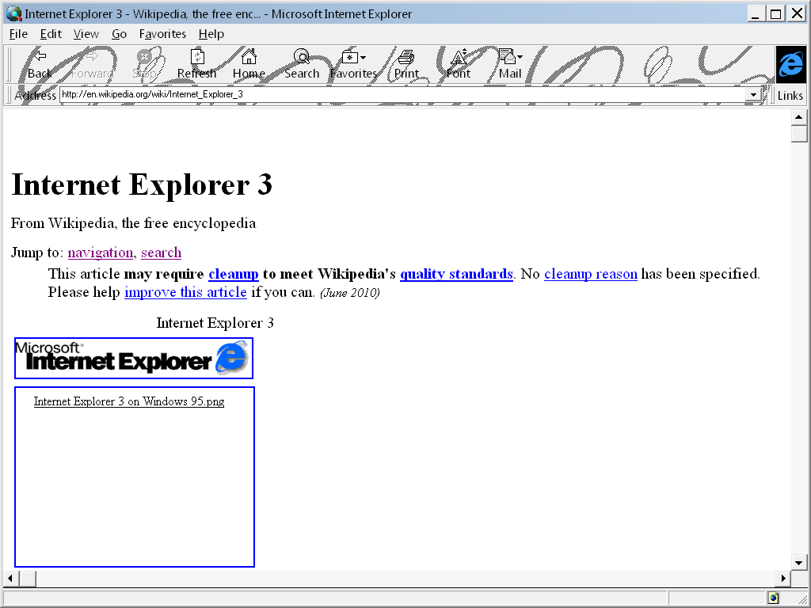
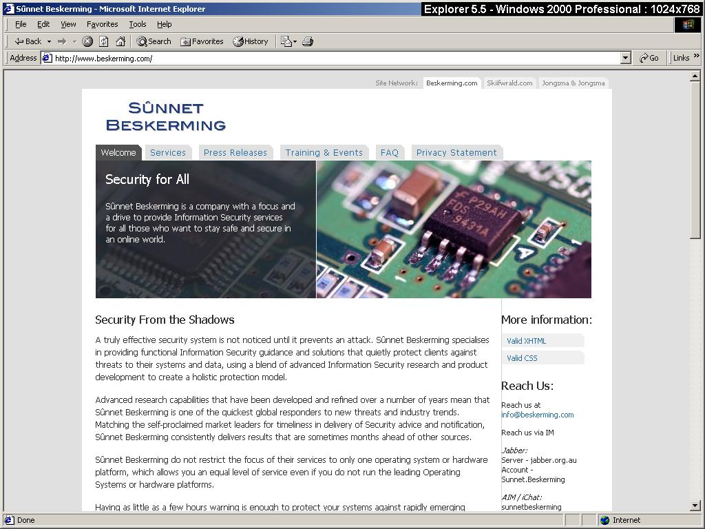
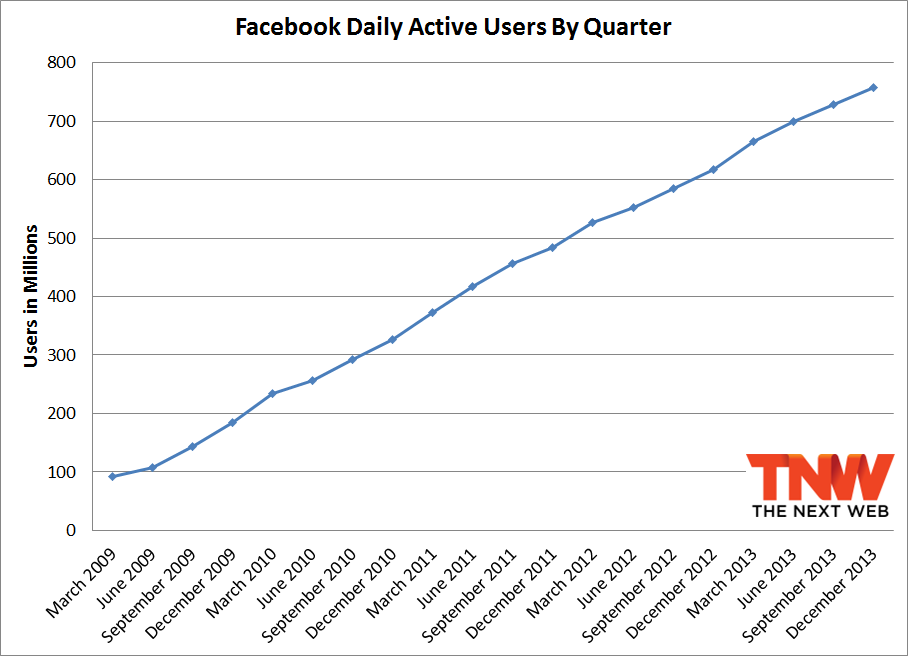
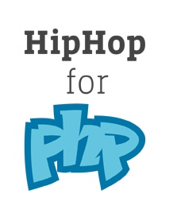
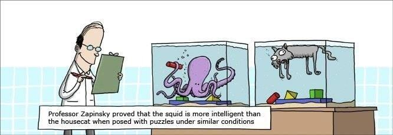

HHVM et "Hack", prenez 2 versions d'avance sur PHP
PHP Tour Lyon- Benjamin Clay && Mathieu Darse - Juin 2014
Coucou, je suis Benjamin Clay
- Expert Web et mobile @
 , et éleveur de licornes.
, et éleveur de licornes.
 @ternel
@ternel
Coucou, je suis Mathieu
@mdarse
PHP a de bons cotés :
- C'est facile
- C'est disponible partout
- Belles choses à faire avec ? :p
Des points négatifs :
- "Inconsistent haystack / needle"
- PHP is a HTML file, with logic
- No standards
- Lack of Quality Packages
- Misconception
- You were doing it wrong
- Elitism

Vous vous souvenez d'Internet Explorer ?
Parfait pour un projet rapide, fait le soir dans une chambre d'étudiant.
TheFacebook
Faites un site qui permet de glander au bureau... et :

- == Problème de performances, et scalabilité
- 20 millions de lignes de PHP (0,02 Facebook Unit)
- 400 billion PHP-based page views every month. (400 Facebook Unit)
Possible : Backend en C++ (Extensions PHP)
Mais : Less developpers =( -> Learning C++ // Undesrstand Zend APIs

2010
Compilateur, ou plutôt Source Code Transformer
PHP -> C++, puis compilation g++
Pleins d'alternatives possibles, Quercus: PHP -> Java, PHC: PHP -> C, Phalanger : PHP -> .Net TROLOLOL
90% du site était en HipHop
Jusqu'a 50% de CPU en moins
Deploiement d'un executable
Fuck YEAH, ça à l'air cool
Mais bof en fait
PHP 5.2, et pas complètement
ie. non utilisable
HipHop Virtual Machine
Création par une équipe de 3 personnes
En quelques mois, meilleurs perfs que HipHop
Et maintenant, encore plus performant !
- CLI + FastCGI
- 64bits
- Code machine caché en sqlite
- JIT
- Explication JIT
Release Open Source !
Calendrier de releases : toutes les 2 semaines en interne / toutes les 8 semaines / nightly
Tente d'être compatible avec un maximum de projets
- Compatibilité : Laravel, Twig, Drupal, ...
- Extensions dynamiques - comme PHP
- Peuvent être écrite en PHP, Hack ou C++, et même en combinant des langages
- Linux: repo Debian, Ubuntu, Fedora...
- MacOSX : Homebrew
- Windows: AHAH.
Benchmarks

Premières request servent à chauffer la bête ! - http://stackoverflow.com/questions/17898783/hhvm-poor-performance
Il suffit de chercher "HACK Facebook" sur un moteur de recherche
Comme pour le Go de Google, avec #golang, utilisez #hacklang ;)
Dispo dans HHVM
Écrit en OCaml
Fonctionne très bien en parallèle de PHP
Partial / strict (tout doit être typé, pas d'appel a du code non hack) / decl (code non-strict appelable) / unsafe (pas de type-checking)
En fait Facebook a commencé à changer PHP bien avant !
XHP !
Extension PHP qui augmente la syntaxe du langage
Exemple :
<?php
$href = 'http://www.facebook.com';
echo <a href={$href}>Facebook</a>;
Rappel !
PHP est dynamiquement typé
-> Flexibilité, mais aussi erreurs possibles !
Type hinting
Return type hinting
Propriétés de classe
Daemon type-checker : sur le poste du dev, programme qui watch le code source
A la modification d'un fichier, il y a comparaison avec l'ancien fichier, et re-calcule si besoin
method by method === rapidité !
Configuration via .hhconfig
hh_client pour voir l'état
Type de retour des fonctions / méthodes
Type nullable: ?type
Types disponibles: int, float, string, bool, MyClass, Vector, this, mixed, void
?int, array, array, array, array
No templating
Type annotations
Generics
Collections
Nullable Types
Fonction asynchrone
Pas de ?>
On ne mélange pas HTML et Hack.
Generics
Type de classe variable
Analyse statique du code
MyClass != MyClass
Collections
Vector : Liste ordonnée de valeur du même type
$vector = Vector{'pony', 'unicorn'};
Map : Valeurs de même type, clés = string ou int
$map = Map{'pony' => 5, 'unicorn' = 42};
Set : Liste d'int ou string
$set = Set{'pony', 'unicorn'};
Pair : Pair de valuer de n'importe quel type, immutable
$pair = Pair{'jolicode', 42};
Lambda
Binding de variable automatique
Syntaxe plus courte
==>
>
Async
Paralléliser les tâches
async et await keywords
Early stage
Non supporté dans Hack
goto, if ... endif;, break N, continue N, variables globales
http://docs.hhvm.com/manual/en/hack.unsupported.php
Ça ne vous dit rien ?
- https://wiki.php.net/rfc/returntypehinting
- https://wiki.php.net/rfc/constructor-promotion
- https://wiki.php.net/rfc/consistent-names
- http://www.php-cpp.com/
Faut-il l'utiliser ?
Hack is designed by Facebook for Facebook
HHVM reste un runtime PHP ! Hack vient en plus seulement.